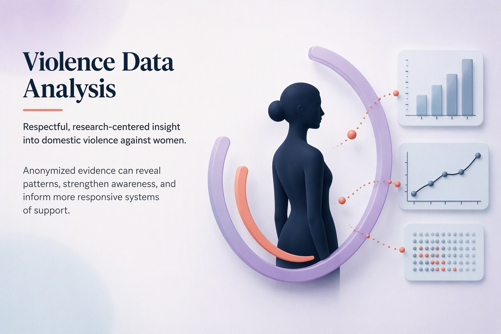

VAW Effects on Mental Health

Conducted a statistical analysis of 161,155 survey records in R to measure the impact of domestic violence on women’s safety perceptions and mental health.
No hosted demo yet. Run it locally with shiny::runApp("dashboard.r").
Problem
Investigated the prevalence and consequences of domestic violence against women, focusing on how exposure affects safety perceptions, mental health and help-seeking behaviors, and how outcomes differ across demographic groups.
Data
Survey microdata CSV with 70+ variables. The analysis covers 161,155 records.
Approach
- Pipeline of R scripts for data cleaning, normalization and analysis.
- Chi-square tests, Welch’s t-test and Wilcoxon rank-sum test.
- MANOVA with post-hoc Bonferroni correction.
- Mediation analysis with bootstrapping (2,000 simulations), plus logistic and linear regression.
- Findings visualized in an interactive Shiny dashboard.
Stack
| Technology |
|---|
| R |
| RStudio |
| ggplot2 |
| Shiny |
| Statistical Modeling |
Results
Overall domestic violence exposure prevalence was 57.98%. Exposed women had significantly higher unsafe scores (0.450 vs 0.326, p < .001). Frequent conflicts mediated ~13% of the relationship between exposure and safety perception. Survivors reported higher food insecurity (0.413 vs 0.250) and lower well-being.
What I’d improve
Deploy the Shiny dashboard to a public URL (e.g., shinyapps.io) so reviewers can explore the findings interactively.